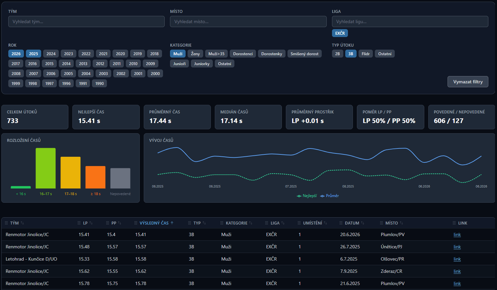

O mně
Jsem student třetího ročníku oboru Informační technologie na Fakultě informačních technologií VUT v Brně. Zajímám se především o vývoj softwaru, datovou analýzu a skriptování. Ve volném čase dělám sport, hraji počítačové hry a programuji.
Jsem student třetího ročníku oboru Informační technologie na Fakultě informačních technologií VUT v Brně. Zajímám se především o vývoj softwaru, datovou analýzu a skriptování. Ve volném čase dělám sport, hraji počítačové hry a programuji.
Fakulta informačních technologií VUT v Brně
Bakalářský studijní program – Informační technologie (2023 – dosud)
Gymnázium T.G. Masaryka Zastávka, příspěvková organizace
Všeobecné gymnázium, maturita 2023
Rolovat →
K programování a k počítačům jako takovým mě přivedly počítačové hry. Toto byly moje první projekty, které jsem začal dělat na střední škole.
V rámci hostování Minecraft serveru pro asi 30 lidí jsem vytvořil Discord bota pro správu rolí na Discordu. Hostování tohoto bota je na fly.io.


V rámci předmětu ITU jsme v týmu vytvořili full-stack aplikaci pro správu receptů. Zde jsem měl zodpovědnost za kompletní backend (návrh, API, databáze) a práci na frontendu jsme si rozdělili v týmu.

Soubor skriptů pro stříhání videí z hasičských útoků.
Jsou tu skripty pro stahování videí z YouTube, skript pro úpravu kodeků a spojování videí, GUI pro ukládání časových značek, samotné stříhání videí a přidávání overlaye se značkami.
Žďárská liga Zbraslav 2026

Skript pro stahování výsledků z hasičských soutěží z webu firesport.eu, který má workflow na GitHubu a spouští se každý den. Tato data jsou uložena v databázi (Supabase) a použita na webu, který tato data zobrazuje a umožňuje jejich filtrování.

Automatizace procesů v google sheets pro restauraci Heralt. Tento projekt zahrnuje skripty pro automatizaci správy objednávek, vytváření faktur, přepisu objednávek do faktur a jejich ukládání a další. Tento projekt mě hodně naučil o návrhu systému odolného vůči chybám, práci s API, zpracování velkého množství dat a celkové spolehlivosti systému.
Rolovat →
Spoustu volného času trávím sportem. Nejvíce se věnuji hasičskému sportu, a to specificky požárnímu útoku za tým SDH Zbraslav. Dalším mým oblíbeným sportem je florbal.


"Straight line mission" je výzva ujít nějaký stanovený úsek (například Jihomoravský kraj) co nejvíce rovnou čarou. Tuto výzvu vymyslel youtuber GeoWizard. S kamarádem jsme už takto podstoupili tři kraje: Jihomoravský, Pardubický a Vysočinu. Na fotkách jsou vidět naše ujité trasy.


K mým nejoblíbenějším hrám patří Team Fortress 2 - nejlepší FPS všech dob, Minecraft kvůli kamarádům, Factorio a další.


Rád hraji na kytaru, basu a klavír. Co se týče poslechu, mám rád téměř vše až na metal a český rap (i zde jsou ale nějaké výjimky).

Tady je TierList mých oblíbených filmů.